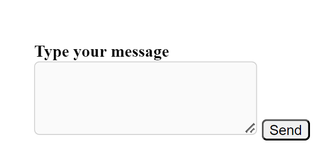
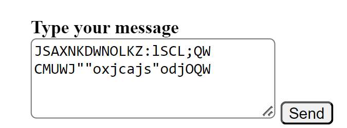

dialogbox
Home


The concept of a frozen (or disabled) text box versus an unfrozen (or enabled) text box based on user authentication status plays a crucial role in providing a controlled and secure user experience.
Frozen Text Box (When User is Not Logged In):
When a user is not logged in, the text box is typically frozen or disabled. This means that the user is unable to input any text or interact with the text box. This approach serves multiple purposes:
Security and Privacy:
By restricting text input when the user is not logged in, it helps maintain the security and privacy of user data. Unauthenticated users are not allowed to provide information until they have completed the login or registration process.
Controlled Access to Features:
Limiting text input for non-logged-in users ensures controlled access to specific features or functionalities that may require authentication. This prevents unauthorized users from contributing content or engaging in certain activities.
Encouragement to Register/Login:
It acts as an incentive for users to register or log in. By displaying a frozen text box, users are prompted to complete the registration process to unlock full access and participation within the platform.
Unfrozen Text Box (After User Completes Registration and Logs In):
Once the user completes the registration process and logs in, the text box transitions to an unfrozen or enabled state. This allows the user to input text, contribute content, or interact with the text box as intended. Here's why this transition is important:
User Engagement:
Enabling the text box after login encourages user engagement. Users can actively participate in discussions, contribute their thoughts, or provide information, fostering a dynamic and interactive community environment.
Personalization:
An unfrozen text box allows users to personalize their experience by contributing content and expressing their opinions. This contributes to a sense of ownership within the community.
Enhanced Interaction:
With an enabled text box, users can seamlessly interact with various features, such as commenting, posting, or messaging. This enhances the overall user experience by providing a smooth and unrestricted interaction flow.
Full Platform Access:
Unfreezing the text box is often accompanied by unlocking other features and functionalities across the platform. This ensures that registered and logged-in users have access to the full suite of tools and capabilities.
In summary, the distinction between a frozen and unfrozen text box based on user authentication status is a strategic design choice that balances security, user engagement, and controlled access within the platform. It guides users towards completing the registration process while providing a seamless and feature-rich experience for those who are logged in.